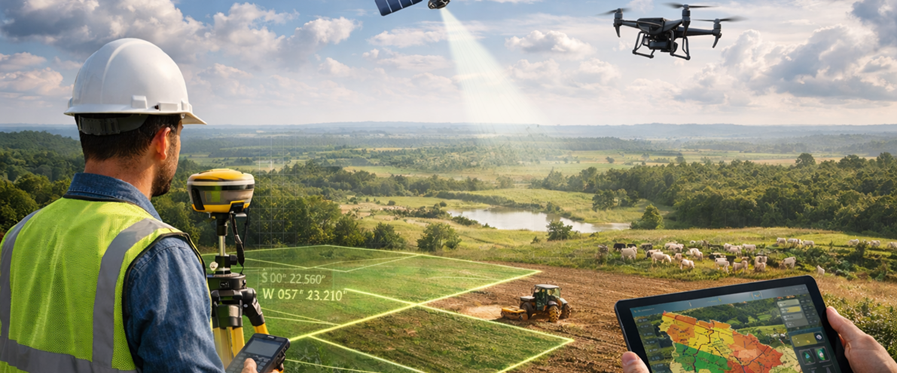

Precisão que impulsiona sua produção Mapeamos sua terra com tecnologia e experiência para produzir com segurança.
 Seu imóvel regularizado, seu futuro garantido Georreferenciamento completo para valorizar sua propriedade.